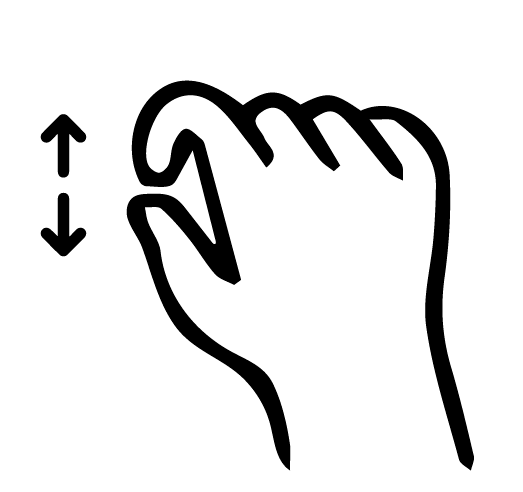

Buscar
BUAP
Recorrido 3D
Información
Cómo llegar
×
×
BUAP
Cómo llegar
×
Barrio Histórico Universitario
Barrio Histórico Universitario
Corredor Carolino
Corredor Jesuita
Corredor San José
Corredor Analco
Patrimonio Histórico Universitario
cultura.buap.mx/patrimoniohistorico/
